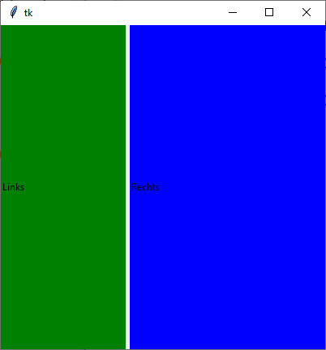

ttk.PanedWindow
ttk.PanedWindow erzeugen
pw = ttk.PanedWindow(parent, Optionen)
PanedWindow kennt die Optionen:
| Optionsname | Beschreibung |
|---|---|
| height, width | Höhe/Breite in Pixel |
| orient | Anordnung der Panes: tk.HORIZONTAL: Panes werden von links nach rechts angeordnet,
tk.VERTICAL: von oben nach unten |
ttk.PanedWindow kennt die Standardoptionen: class_, cursor, style und takefocus
Dazu kommt die Paneoption für jedes Teilfenster: weight:
relativer Stretchfaktor für das Teilfenster, kann bei pw.add(…)
angegeben werden.
Das folgende Programm stellt ein PaneWindow vor, bei dem zwei Frames von links nach rechts angeordnet werden:
import tkinter as tk
from tkinter import ttk
from tkinter import font
class A(tk.Tk):
def __init__(self):
super().__init__()
self.geometry('400x400')
self._createWidgets()
def _createWidgets(self):
pw = ttk.PanedWindow(self, orient=tk.HORIZONTAL)
pw.pack(fill=tk.BOTH, expand=tk.YES)
f = ttk.Frame(pw, relief=tk.SUNKEN)
ttk.Label(f, text='Oben', background='green').pack(fill=tk.BOTH, expand=tk.YES)
pw.add(f, weight=3)
g = ttk.Frame(pw, relief=tk.RAISED)
ttk.Label(g, text='Unten', background='blue').pack(fill=tk.BOTH, expand=tk.YES)
pw.add(g, weight=5)
if __name__ == '__main__':
window = A()
window.mainloop()PanedWindow-Methoden
| Methode | Parameter | Rückgabewert | Beschreibung |
|---|---|---|---|
| p.add(w, weight=N) | w: Widget (bspw. ein Frame), weight: (optional) Gewichtung | - | Fügt ein neues Pane-Widget ein |
| p.forget(pane) | pane: Index oder Widget | - | Entfernt ein Pane-Widget |
| p.insert(where, w, weight=N) | where: Index, 'end' oder Widget,
w: neues Pane, weight: (optional) Gewichtung | - | Fügt ein neues Pane-Widget an einer Position ein |
| p.panes() | - | Liste | Liste der Child-Widgets in Tcl/Tk-Notation |
| p.sashpos(leiste, pos) | Nummer der Leiste / des Anfassers und eine Position als ganze Zahl | Aktuelle Position als ganze Zahl | Verschiebt die Leiste, also den Trenner zwischen Panes, auf pos. |
Folgende allgemeine Widget-Methoden werden unterstüzt:
- Konfigurationsmethoden:
cget(…)undconfigure(…) - Sonstige Methoden:
identify(…),instate(…)undstate(…)
Virtuelle Ereignisse
PanedWindow kennt das virtuelle Ereignis '<<EnteredChild>>' -- Wechselt die Maus von einem Pane zu einem anderen und kreuzt dabei den Trenner, dann wird dieses Ereignis ausgelöst.